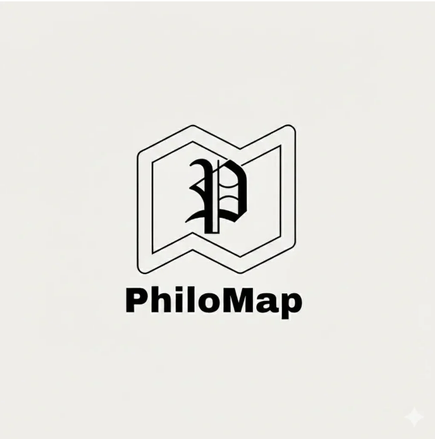

Mapa da Filosofia

Explore as profundezas do conhecimento humano através de uma jornada visual e intelectual. O PhiloMap reúne conceitos fundamentais para facilitar o estudo e a reflexão crítica no cotidiano.

Explore as profundezas do conhecimento humano através de uma jornada visual e intelectual. O PhiloMap reúne conceitos fundamentais para facilitar o estudo e a reflexão crítica no cotidiano.
Sortear um pensamento...
Projeto acadêmico focado na disseminação do conhecimento filosófico através de tecnologias web modernas.
A investigação racional sobre o agir humano. Estuda os valores, o caráter e a busca por uma vida virtuosa e prudente.

Eudaimonia e Virtude
Dever e Razão
A ciência do raciocínio correto. Analisa as estruturas de inferência para garantir a validade dos argumentos e do pensamento.
Lógica Simbólica
Linguagem e Mundo
A aplicação rígida de normas morais. Diferencia-se da ética por sua natureza prescritiva e muitas vezes dogmática.
A busca pelo Bem
Idealismo Moral
Estudantes e pesquisadores que compartilham do mapa.
Carregando registros do banco...